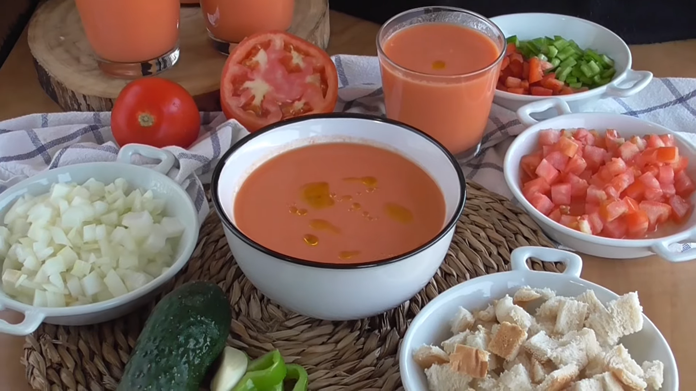
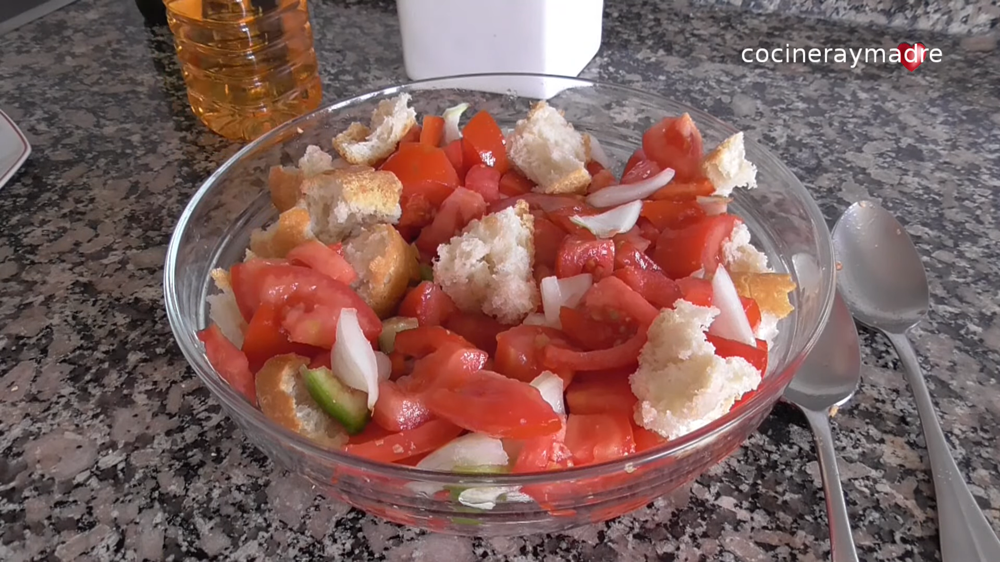
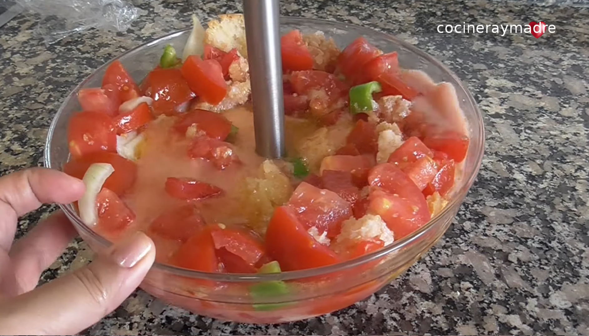

Detalle de receta
Gazpacho clasico
Explicacion ampliada de esta receta fria mediterranea a partir del elemento listado en la pagina de recetas.
Imagen destacada

Preparacion detallada
El gazpacho clásico parte de tomate maduro, pepino, pimiento y pan, triturados hasta conseguir una crema ligera y uniforme. La calidad del aceite de oliva virgen extra condiciona de forma directa el resultado final y aporta untuosidad.
Para afinar la textura, conviene enfriar la mezcla antes de emulsionar el aceite en hilo fino. Ese paso estabiliza el color, el aroma y la sensación en boca, dejando una base fresca y equilibrada.
En el servicio, el contraste se logra con una guarnición de hortalizas cortadas en cubos muy pequeños. Esta presentación mejora la experiencia visual y permite ajustar cada ración al gusto.
Galeria de apoyo


